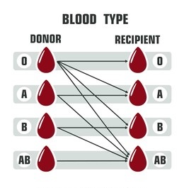
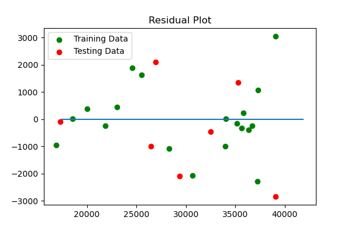

The Data
We obtained data for the past 25 years that tracks trends in organ transplant, diabetes, obesity, and opioid overdoses in the US population. Using this data, we created a machine learning model that will forecast the number of people on the kidney waitlist based on these factors. Nationally and in most states there is a clear correlation amongst these factors and the number on the kidney waitlist. Using this model, one can predict how much the kidney waitlist will decrease if obsesity, diabetes, or opiod use is decreased by X%, which could help communities drill down on the most actionable cause to drive waitlist numbers down. This model will appeal to a broad range of people in medical or government fields as a kidney transplant costs $300-400K on average and strains both medical and financial resources. The Data has been normalized to population and we chose to focus on kidney recipients with a blood type of O - this accounts for about 50% of the general population and is the most limiting blood type as a recipient.
Results were just released for the complete year 2020. The impact of Covid has brought the waitlist down year over year by -13.6% (from 41k to 36k). Is this an outlier? The change in residual plots confirms that indeed the change is considered an outlier. However, it does not necessarily change the efficacy of the overall model (Please see OLS summary below comparing output based on 2019 and 2020).
The conclusion is that although an outlier, the F-tests, p-value, and t-tests do not materially change. However, we performed another test on the trend of waitlist. Using an ARIMA model, we used a 5-year year moving average and forecasted the waitlist trend beginning in 2010 to 2020. The chart below confirms that the 2019 decline should be considered an outlier and the trend of waitlists nationally should not materially decline.
2019
2020
ARIMA
The Model and National Outputs
#Correlation Matrix
corr_matrix = df[["Diabetes", "Obesity", "Overdose", "Pct_O"]].corr()
print(corr_matrix)
#Assign variables for regression
X = df[['Diabetes','Obesity','Overdose','Pct_O']]
y = df['Total_Adj'].values.reshape(-1,1)
print(X.shape, y.shape)
#Use train_test_split to create training and testing data
from sklearn.model_selection import train_test_split
X_train, X_test, y_train, y_test = train_test_split(X, y, random_state=42)
#Create model
model = LinearRegression()
#fit the model to the training data and calculate the scores for the training and testing data
#Begin
model.fit(X_train, y_train)
training_score = model.score(X_train, y_train)
testing_score = model.score(X_test, y_test)
#End
#Plot Residuals for Training and Testing Data
#Begin
plt.scatter(model.predict(X_train), model.predict(X_train) - y_train, c="green", label="Training Data")
plt.scatter(model.predict(X_test), model.predict(X_test) - y_test, c="red", label="Testing Data")
plt.legend()
plt.hlines(y=0, xmin=y.min(), xmax=y.max())
plt.title("Residual Plot")
#End
#R2 of original model
r_sq = model.score(X, y)
#Make a Prediction using model
predictedTotal_Adj = model.predict([[10.77,32,19.9,49]])
modeldetail = sm.OLS(y, X)
resultstest = modeldetail.fit()
plt.scatter(X[('Diabetes')], y, label='Diabetes')
plt.scatter(X[('Obesity')], y, label='Obesity')
plt.scatter(X[('Overdose')], y, label='Overdose')
plt.scatter(X[('Pct_O')], y, label='% O-type')
plt.title('Full Model')
plt.xlabel('Variables through Time (in %, except Overdose in per 100,000)')
plt.ylabel('Kidney Waitlist through Time')
plt.legend(title='variables',loc='lower center')
plt.savefig('images/National_full.png', dpi=100, facecolor='w', edgecolor='w',
orientation='portrait', format=None,
transparent=False, bbox_inches=None, pad_inches=0.2, metadata=None)
plt.show()

model_lin = sm.OLS.from_formula("Total_Adj ~ Diabetes + Obesity + Overdose + Pct_O", data=df)
result_lin = model_lin.fit()
result_lin.summary()
sns.regplot(X[('Diabetes')],y)
plt.title('Diabetes % vs. Waitlist')
plt.xlabel('Diabetes %')
plt.ylabel('Kidney Waitlist through Time')
plt.savefig('images/National_diabetes.png', dpi=100, facecolor='w', edgecolor='w',
orientation='portrait', format=None,
transparent=False, bbox_inches=None, pad_inches=0.2, metadata=None)
sns.regplot(X[('Obesity')],y)
plt.title('Obesity % vs. Waitlist')
plt.xlabel('Obesity %')
plt.ylabel('Kidney Waitlist through Time')
plt.savefig('images/National_obesity.png', dpi=100, facecolor='w', edgecolor='w',
orientation='portrait', format=None,
transparent=False, bbox_inches=None, pad_inches=0.2, metadata=None)
sns.regplot(X[('Overdose')],y)
plt.xlabel('Overdose rate per 100k')
plt.title('Overdoses rate per 100k vs. Waitlist')
plt.ylabel('Kidney Waitlist through Time')
plt.savefig('images/California_overdose.png', dpi=100, facecolor='w', edgecolor='w',
orientation='portrait', format=None,
transparent=False, bbox_inches=None, pad_inches=0.2, metadata=None)

sns.regplot(X[('Pct_O')],y)
plt.xlabel('Percent O Blood-Type')
plt.title('Percent O Blood-Type vs. Waitlist')
plt.ylabel('Kidney Waitlist through Time')
plt.savefig('images/California_pct_O.png', dpi=100, facecolor='w', edgecolor='w',
orientation='portrait', format=None,
transparent=False, bbox_inches=None, pad_inches=0.2, metadata=None)
coefficients = pd.concat([pd.DataFrame(X.columns),pd.DataFrame(np.transpose(model.coef_))], axis = 1)
coefficients_transposed = coefficients.T
coefficients_transposed
coefficients_final = coefficients_transposed[1:]
test_df = pd.DataFrame([[r_sq,training_score,testing_score,model.intercept_ ,predictedTotal_Adj]])
summary_df = pd.concat([test_df, lastyear_df, coefficients_final], axis=1)
summary_df.columns = ['R2','Training Score', 'Test Score', 'Intercept','Forecast based on Natl Avg','Last Waitlist','Coef_Diabetes','Coef_Obesity','Coef_Overdose','Coef_Pct_O']
summary_df['Intercept'] = summary_df['Intercept'].astype(int)
summary_df['Forecast based on Natl Avg'] = summary_df['Forecast based on Natl Avg'].astype(int)
summary_df['R2'] = summary_df['R2'].round(decimals=4)
summary_df['Training Score'] = summary_df['Training Score'].round(decimals=4)
summary_df['Test Score'] = summary_df['Test Score'].round(decimals=4)
summary_df = summary_df[['R2','Training Score','Test Score','Intercept','Coef_Diabetes','Coef_Obesity','Coef_Overdose','Coef_Pct_O','Last Waitlist','Forecast based on Natl Avg']]